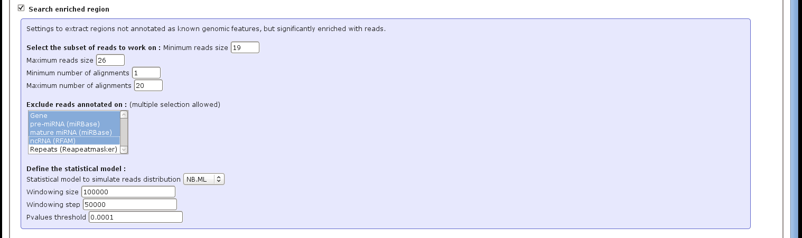

The enrichment analysis can be launch from the interface, by specifying the different options as explained in the section 5.5.
As for the Genome tracks options, the user can choose to focus on a subset of reads. The minimum and maximum size of the reads, as well as the minimum and maximum number of locations can be used to select these reads. Then only the reads not annotated on the selected items (coding genes, miRNAs, ncRNAs) will be used for the analysis (Figure 7).
Figure 7:
ncPRO-seq web interface : search enriched regions
|  |
Jocelyn Brayet
2015-02-12